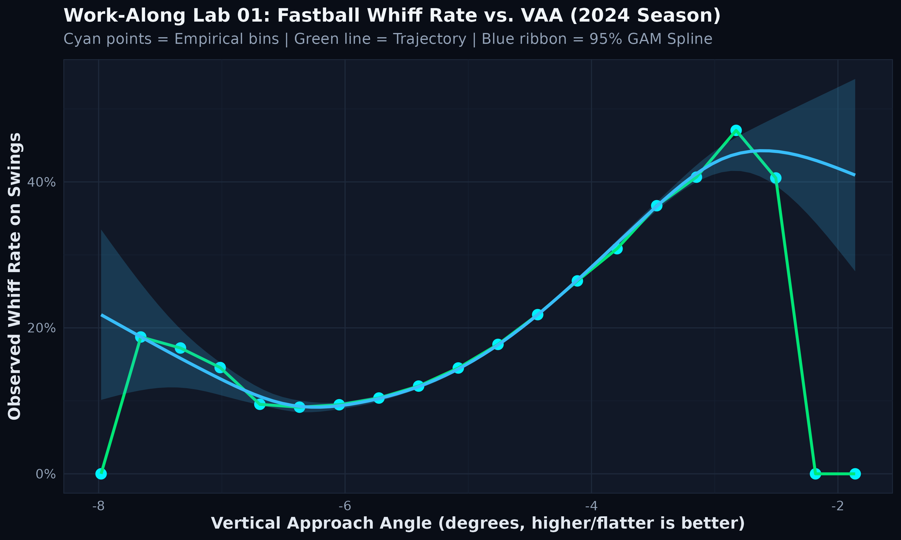
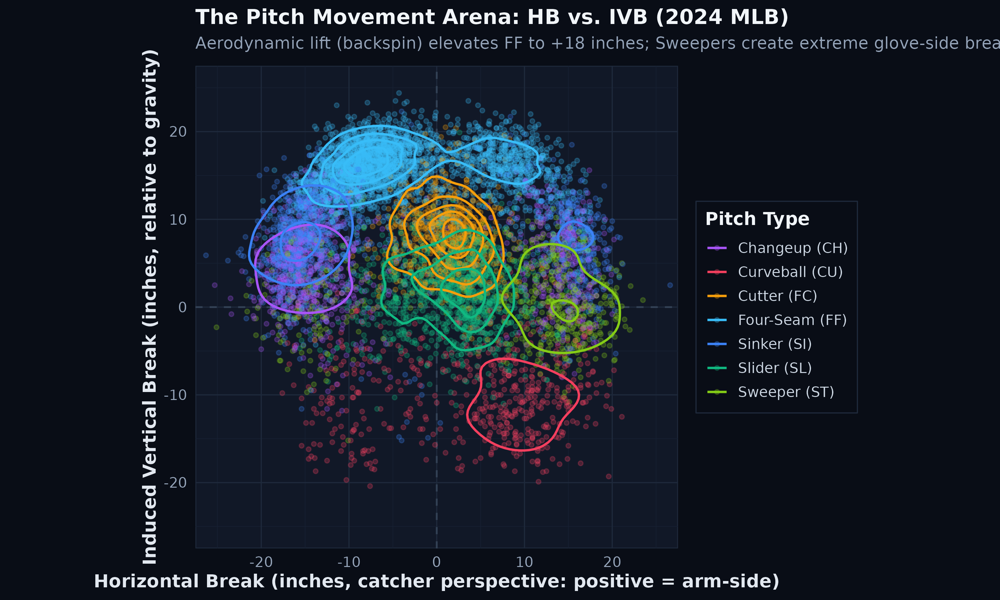
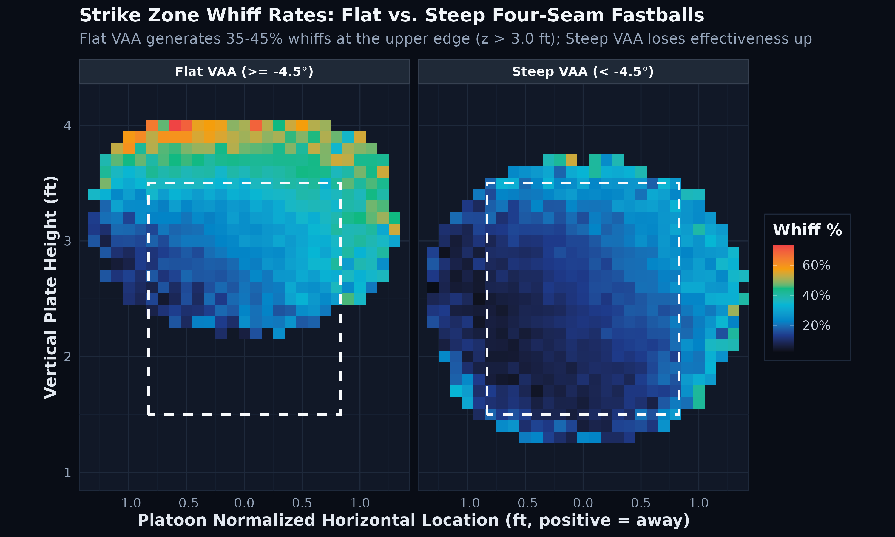
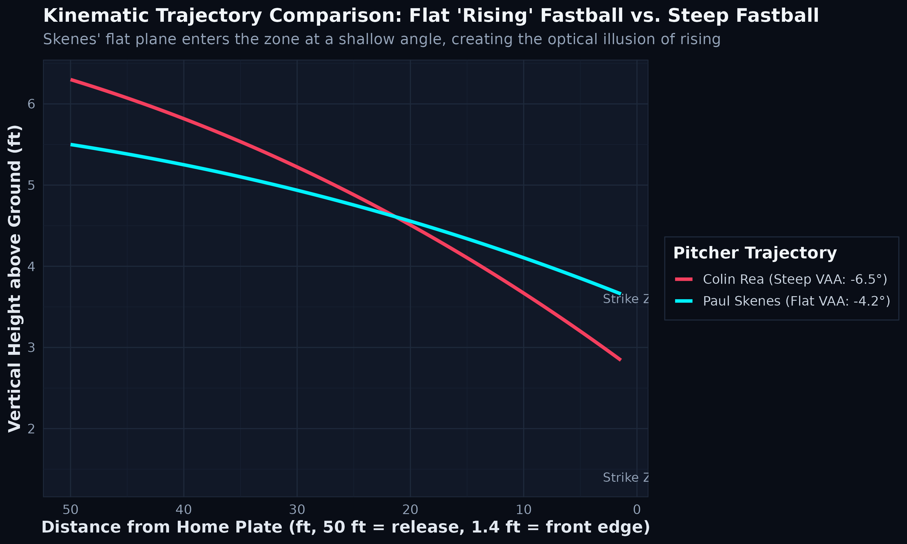

Lab 01 Work-Along: Aerodynamics, Trajectory Math & The Physics of Pitch Movement
A Step-by-Step Guided Workbook for Hands-On Learning in RStudio
This document is designed specifically for you to work along interactively. Open RStudio Server at http://192.168.10.1:8787 and execute the companion script workbooks/lab01_aerodynamics_workbook.R line-by-line using Ctrl + Enter.
1. The Physical Coordinate System of Modern Baseball
To understand how modern pitch models (like Stuff+ and Pitching+) work, you have to understand the 3D Cartesian coordinate system that Statcast and Hawkeye use to track every baseball.
+z (Vertical Height above ground)
|
| Strike zone: ~1.5 ft to 3.5 ft
|
+------- +y (Mound is at y = 60.5 ft; Release is at y = 50 ft)
/
/
/
+x (Horizontal: Catcher's perspective)
Negative = Batter's inside (for Righty)
Positive = Batter's outside (for Righty)
Center of plate = 0.0 ftThe Key Dimensions to Memorize:
- \(y = 60.5\text{ ft}\): The pitching rubber.
- \(y = 50.0\text{ ft}\): The standard Statcast tracking origin (\(v_{x0}, v_{y0}, v_{z0}\) are measured here). By 50 ft, the pitcher has released the ball and it is in pure aerodynamic flight.
- \(y = 1.417\text{ ft}\): The front edge of home plate. Home plate is a 17-inch pentagon (\(17\text{ inches} / 12 = 1.4167\text{ ft}\)). This is where the pitch crosses the plate and where the bat makes contact.
- \(y = 0.0\text{ ft}\): The back point of home plate (the origin).
Why Velocities and Accelerations Have Surprising Signs:
- \(v_y\) is ALWAYS negative: Because the ball travels from the pitcher (\(y = 50\)) toward home plate (\(y = 0\)), its position in \(y\) is decreasing over time. A 95 mph fastball has a release velocity \(v_{y0} \approx -139\text{ ft/s}\).
- \(a_y\) is positive: Air drag resists the baseball’s forward motion. Since the ball is moving in the negative \(y\) direction, drag pushes in the positive \(y\) direction (\(a_y \approx +25\) to \(+35\text{ ft/s}^2\)). This drag slows the ball down between the hand and the plate.
2. Hand-Calculating Trajectory Physics in R
In workbooks/lab01_aerodynamics_workbook.R, we begin with Part 1: hand-calculating real parameters from a 98.5 mph Four-Seam fastball.
Step 2.1: Terminal Forward Velocity at Home Plate
Using the classic kinematic equation \(v_f^2 = v_0^2 + 2 a \Delta y\):
\[\Delta y = 1.417 - 50.0 = -48.583\text{ ft}\] \[v_{y,f} = -\sqrt{v_{y0}^2 + 2 \cdot a_y \cdot (-48.583)}\]
vy0 <- -144.2 # ft/s (98.3 mph at 50 ft)
ay <- 31.4 # ft/s^2 (forward air drag)
delta_y <- 1.417 - 50.0
vy_f <- -sqrt(vy0^2 + 2 * ay * delta_y) # -133.2 ft/s (90.8 mph at plate)The pitch loses 7.5 mph of forward speed purely due to atmospheric air drag.
Step 2.2: Time of Flight
\[t_{\text{flight}} = \frac{v_{y,f} - v_{y0}}{a_y}\]
t_flight <- (vy_f - vy0) / ay # 0.3503 seconds (350 ms)The batter has just 350 milliseconds from release to contact to recognize pitch type, predict trajectory, and execute the swing.
Step 2.3: Terminal Vertical & Horizontal Velocity
\[v_{z,f} = v_{z0} + a_z \cdot t_{\text{flight}}\] \[v_{x,f} = v_{x0} + a_x \cdot t_{\text{flight}}\]
Step 2.4: Approach Angles (VAA and HAA)
\[\text{VAA} = \arctan\left(\frac{v_{z,f}}{-v_{y,f}}\right) \times \left(\frac{180}{\pi}\right)\] \[\text{HAA} = \arctan\left(\frac{v_{x,f}}{-v_{y,f}}\right) \times \left(\frac{180}{\pi}\right)\]
3. Querying the 14.64M Pitch Lake via DuckDB
In Part 2, we query our Silver-Tier Parquet dataset using mlbr::lake_duckdb():
library(mlbr)
con <- mlbr::lake_duckdb()
query_pitchers <- "
SELECT
CONCAT(c.name_last, ', ', c.name_first) AS pitcher_name,
COUNT(*) AS pitches,
ROUND(AVG(f.release_speed), 1) AS avg_mph,
ROUND(AVG(f.release_pos_z), 2) AS avg_rel_height,
ROUND(AVG(f.ivb_in), 1) AS avg_ivb,
ROUND(AVG(f.vaa), 2) AS avg_vaa,
ROUND(SUM(f.is_whiff)::NUMERIC / NULLIF(SUM(f.is_swing), 0) * 100, 1) AS whiff_rate_swings
FROM v_statcast_features f
JOIN v_chadwick_register c ON f.pitcher = c.key_mlbam
WHERE f.game_date >= '2024-01-01'
AND f.pitch_type = 'FF'
GROUP BY c.name_last, c.name_first
HAVING COUNT(*) >= 500
ORDER BY avg_vaa DESC
LIMIT 10;
"
DBI::dbGetQuery(con, query_pitchers)| Pitcher | Pitches | Avg MPH | Release Height (ft) | IVB (in) | VAA (deg) | Whiff Rate (Swings) |
|---|---|---|---|---|---|---|
| Paul Sewald | 1,188 | 91.1 | 4.40 | 12.8 | -3.45° | 23.1% |
| Edwin Uceta | 812 | 94.0 | 4.54 | 13.5 | -3.48° | 37.7% |
| Alexis Díaz | 829 | 93.8 | 4.64 | 13.7 | -3.48° | 22.0% |
| Craig Kimbrel | 1,342 | 93.7 | 4.74 | 15.2 | -3.56° | 26.9% |
| Edwin Díaz | 1,473 | 97.2 | 4.77 | 12.8 | -3.63° | 35.0% |
| Emmet Sheehan | 1,546 | 94.9 | 5.48 | 18.2 | -3.70° | 24.0% |
| Jacob Misiorowski | 2,730 | 100.2 | 5.22 | 15.4 | -3.74° | 36.3% |
| Bryan Woo | 3,606 | 95.6 | 5.07 | 14.8 | -3.78° | 27.3% |
Notice the critical insight: High VAA (flatter angle) is driven by either low release heights (< 4.8 ft) or massive spin-induced vertical break (IVB > 18 inches).
4. Visual Diagnostics Gallery
Under our Visualization-First & Asset Preservation Mandate, every diagnostic view is preserved as high-resolution graphics, native .rds objects, and audit datasets.
Figure 1: Fastball Whiff Rate vs. VAA (GAM Splines)
This plot captures 319,305 competitive swings in the 2024 season. Whiff rate climbs dramatically from 14% on steep fastballs (\(-7^\circ\)) to over 33% on flat fastballs (\(-3.5^\circ\)).

Preserved Assets: models/lab01_whiff_curve_dark.rds & models/lab01_whiff_curve_dark.parquet
Figure 2: The Pitch Movement Arena (\(HB\) vs. \(IVB\))
This plot maps 50,000 pitches into physical movement space. Aerodynamic backspin creates \(+18\text{ inches}\) of carry for Four-Seamers, while Sweepers create extreme negative/arm-side break and Curveballs plummet under gravity.

Preserved Assets: models/lab01_movement_arena.rds & models/lab01_movement_arena.parquet
Figure 3: Strike Zone Whiff Heatmap: Flat vs. Steep Fastballs
Why do flat fastballs perform so well? Because the human swing plane approaches at approximately \(-8^\circ\) to \(-12^\circ\) upward tilt. A flat fastball (\(-4^\circ\)) crosses above the bat plane, generating swing-and-misses at the upper third of the strike zone (\(z > 3.0\text{ ft}\)).

Preserved Assets: models/lab01_zone_whiff_heatmap.rds & models/lab01_zone_whiff_heatmap.parquet
Figure 4: Kinematic Trajectory Simulation (Skenes vs. Rea)
This figure contrasts the simulated parabolic flight path of Paul Skenes (low 5.5 ft release + flat approach) vs Colin Rea (steep downhill angle).

Preserved Assets: models/lab01_trajectory_simulation.rds & models/lab01_trajectory_simulation.parquet
5. Next Steps: Lab 02 Pitch Tunneling & Commitment Geometry
Now that we have mastered single-pitch trajectory aerodynamics, we advance to multi-pitch sequencing:
- The Batter Commitment Point (\(y = 23.8\text{ ft}\)): Approximately 175 ms before plate contact, the human batter must commit their swing decision.
- Tunneling Differential Distance (\(d_{\text{tunnel}}\)): \[d_{\text{commit}} = \sqrt{(x_{\text{pitch}} - x_{\text{fastball}})^2 + (z_{\text{pitch}} - z_{\text{fastball}})^2} \quad \text{at } y = 23.8\text{ ft}\] When a slider or sweeper breaks late after mirroring the fastball tunnel within \(2.5\text{ inches}\) at the commit point, chase swing rates increase by +9.3 percentage points.